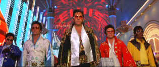

| 3000 Miles to Graceland/ D,A |
| Warner/2001/125/ANA 2.35 |
Is this a bad comedy or a bad action film? It's one or the
other. Violence rules in 3000 Miles to Graceland. Michael,
fresh out of prison, arrives in a desert way-stop to join a gang of thugs
planning to knock off a Las Vegas Casino. The big originality here? Vegas
is rocking with a big Elvis impersonator convention and the gang is
dressed to walk in to the vaults virtually unnoticed. Right? Can you
really hide those big guns?
Before the gang arrives, Michael gets a quickie
from the local road-stop nymphomaniac Cybil, bonds like oil to vinegar
with her young son Jesse, and the dynamics are set for a cross-country
chase after dough and revenge. Apparently, we are supposed to sympathize
with Michael, the only remotely redeemable character. Michael's
chief attribute is that he doesn't shoot people
with the same reckless abandon as every other jabbony in this far-fetched
thin plotted flick.
 |
|
Even glitzy Vegas can't pump
up flat tire script. ©Warner
|
The humor is dished out is huge shapeless
blobs. Subtlety is left behind on the creative floor. The
photography is excessively gimmicky. Fast frenetic editing does nothing to
instill some order of reason to the dim-witted script. The pathetic script
provides a pattern of gratuitous violence and strange character relationships.
The inane movie directed by Demien Lichtenstein is a perfect
reflection.
Kurt Russell tries hard to give
Michael some appeal, but there's nothing beneath the surface of his slick
Elvis outfit. Kevin Costner gets oily and surly as Murphy, the shake,
rattle and roll brains behind the misbegotten enterprise. Courtney Cox
plays Cybil with a vacuous smile that's supposed to cover up a duplicitous
resourcefulness. The on the road antics aren't exactly an actor's
vehicle.
At least 3000 Miles to Graceland looks
great. It consistently displays outstanding color and detail. It's very sharp. Shadow
detail is excellent. Varied lighting schemes are perfectly rendered.
Terrific bright flashy Las Vegas night sky is excellent. The explosions
are lively. The music has plenty of punch on the soundtrack. Good striking
surround sound. No artifacts in sight with rock steady details and
perfectly straight edges. No edginess and fabrics look great. You can
count every hair on a three-hour beard or check out the downy hair on a
pretty gal's face.
|
|
|
|


Agoraquest is offering reviews, forums, news, and more
dedicated to Sony products including, televisions, cameras, audio, DVD,
and more.
 Have you visited Home Theater Talk
lately? One of the friendliest places on the Net for Home Theater and DVD
discussion, you can get help for installation problems or simply share
your opinions with other Vidiots. Have you visited Home Theater Talk
lately? One of the friendliest places on the Net for Home Theater and DVD
discussion, you can get help for installation problems or simply share
your opinions with other Vidiots.

DVD News, Reviews, Previews, Easter Eggs and more.

Mystery writer Fred Hunter digs into classic films on DVD. Check out his
insightful reviews at The Classics on DVD.

Selections from the Feature
Archive include articles on Akira Kurosawa, Frank Darabont, Blonde Bimbos, Hollywood Street Gangs, or Vietnam: The Hollywood Pariah, and many
more....

Click on the image of The Heistmasters for an interesting feature on
the tough guys that pull off the big jobs.

L.A. Confidential (SE) /A,A

Unquestionably the best picture of 1997. Top-notch
entertainment with superb acting.
|